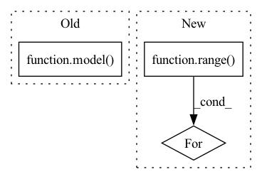

Pattern ID :36730
Before Change
model.eval()
input = torch.rand(1,3,input_size[0],input_size[1]).cuda()
model( input) //warmup
model(input) //warmup
avg_time = 0
After Change
model.eval()
input = torch.rand(batch_size, 3, input_size[0], input_size[1]).cuda()
for _ in range( 10):
model(input) //gpu warmup
avg_time = 0
for i in range(0, times):In pattern: SUPERPATTERN
Frequency: 4
Non-data size: 3
Instances Fragment ID: 104820767
Project Name: developer0hye/pytorch-backbone-benchmark
Commit Name: d4696c3657f99ed40c2bb68a17ce012c10d83fa9
Time: 2021-05-25
Author: developer.0hye@gmail.com
File Name: benchmark.py
M Class Name: AnonimousClass
N Class Name: AnonimousClass
M Method Name: benchmark(4)
N Method Name: benchmark(3)
M Parent Class:
N Parent Class:
M File Name: benchmark.py
N File Name: benchmark.py
M Start Line: 13
M End Line: 15
N Start Line: 6
N End Line: 14
Before Change
lambdas = torch.linspace(0,config["maximum_lambda"],config["num_lambdas"])
rcps_loss_fn = get_rcps_loss_fn(config)
model = model.to(device)
outputs = torch.cat([model( x[0].unsqueeze(0).to(device)) for x in dataset], dim=0).to(device)
labels = torch.cat([x[1].unsqueeze(0).to(device) for x in dataset], dim=0).to(device)
out_dataset = TensorDataset(outputs,labels)
print("Calibrating...")After Change
model = model.to(device)
labels = torch.cat([x[1].unsqueeze(0).to(device) for x in dataset], dim=0)
outputs = []
for i in range( len(dataset)):
print(i)
x = dataset[i][0].unsqueeze(0).to(device)
x = model(x)
print("calculated") Fragment ID: 104820766
Project Name: aangelopoulos/im2im-uq
Commit Name: 3062705f53c32fe42fa6353a3b4add576d773f21
Time: 2021-06-22
Author: angelopoulos@n0024.abc0
File Name: core/calibration/calibrate_model.py
M Class Name: AnonimousClass
N Class Name: AnonimousClass
M Method Name: calibrate_model(3)
N Method Name: calibrate_model(3)
M Parent Class:
N Parent Class:
M File Name: core/calibration/calibrate_model.py
N File Name: core/calibration/calibrate_model.py
M Start Line: 58
M End Line: 63
N Start Line: 58
N End Line: 70
Before Change
comodel.eval()
// Forward
target = model( input)
target_top10 = torch.topk(target, k=10)[1][0].tolist()
// forward_steps produces same outputs
output = comodel.forward_steps(input)After Change
// forward
comodel.clean_state()
// init
for i in range( frames_per_clip):
comodel.forward_step(sample[:, :, i])
// zero-pad end manually
zeros = torch.zeros_like(sample[:, :, 0]) Fragment ID: 104820769
Project Name: lukashedegaard/co3d
Commit Name: 0b7612c3dc839d75811d3b7ccb59a7a0b453f051
Time: 2021-08-31
Author: lh@eng.au.dk
File Name: tests/cox3d/test_x3d.py
M Class Name: AnonimousClass
N Class Name: AnonimousClass
M Method Name: test_CoX3D(0)
N Method Name: test_CoX3D(0)
M Parent Class:
N Parent Class:
M File Name: tests/cox3d/test_x3d.py
N File Name: tests/cox3d/test_x3d.py
M Start Line: 601
M End Line: 687
N Start Line: 599
N End Line: 688
Before Change
comodel.eval()
// Forward
target = model( input)
target_top10 = torch.topk(target, k=10)[1][0].tolist()
// forward_steps produces same outputs
output = comodel.forward_steps(input)After Change
// forward
comodel.clean_state()
// init
for i in range( frames_per_clip):
comodel.forward_step(sample[:, :, i])
// zero-pad end manually
zeros = torch.zeros_like(sample[:, :, 0]) Fragment ID: 104820768
Project Name: lukashedegaard/co3d
Commit Name: 44e4624108b83f8ba94cfb960cdf74f36bbd5703
Time: 2021-09-10
Author: lh@eng.au.dk
File Name: tests/cox3d/test_x3d.py
M Class Name: AnonimousClass
N Class Name: AnonimousClass
M Method Name: test_CoX3D(0)
N Method Name: test_CoX3D(0)
M Parent Class:
N Parent Class:
M File Name: tests/cox3d/test_x3d.py
N File Name: tests/cox3d/test_x3d.py
M Start Line: 601
M End Line: 687
N Start Line: 599
N End Line: 688